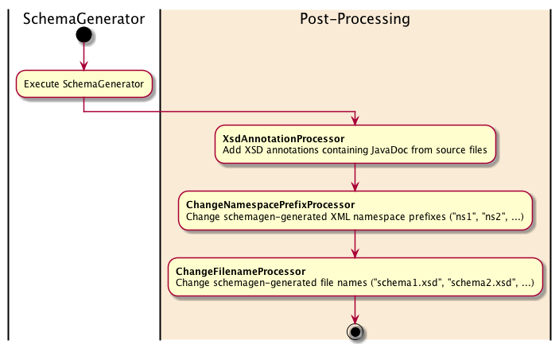

Post-processing Examples - XML Schema Generation
Note: These examples are valid for the 2.x version of the plugin, and do not work for the jaxb2-maven-plugin version 1.x. Post-processing was introduced in version 2 of the jaxb2-maven-plugin.
The SchemaGenerator (“schemagen”) tool which is used by the Jaxb2-Maven-plugin to create XML Schema files from JAXB-annotated java source code does not necessarily produce professional-grade XSD files by default. Some properties of the generated XSD files can be augmented for improved usability; this is done by the jaxb2-maven-plugin following the standard SchemaGenerator in the following order:

Each post-processor used by the jaxb2-maven-plugin process XML nodes and hence implement the NodeProcessor
interface. A brief explanation of what they do is given in the table below.
| NodeProcessor | Description | Why do we need it? |
|---|---|---|
| XsdAnnotationProcessor | Copies JavaDoc from Java classes, fields or methods into the generated XSD as XML annotations. | Professional XSDs should not be denied containing the JavaDoc supplied in the source code, in particular as those JavaDocs frequently explain important facts about permitted values or data use. This postprocessor generates XML documentation annotations from the JavaDoc in source code. |
| ChangeFilenameProcessor | Alters the filename of a generated XSD, which by default is schema1.xsd, schema2.xsd etc. | Professional XSDs should be defined within usable/understandable file names. SchemaGen creates one file per XML namespace in the compilation unit, but the tool cannot figure out how to name the XSD files sensibly. With several namespaces in use, it quickly becomes problematic to keep track of which XSD file contains which namespace. |
| ChangeNamespacePrefixProcessor | Alters the namespace prefix for namespaces within generated XSDs, which by default is ns1, ns2 etc. | Professional XSDs should contain usable/understandable namespace prefixes. For example, this post-processor
permits changing <xs1:fiscalLaw> to <swedishLaws:fiscalLaw>, to distinguish it
from <britishLaws:fiscalLaw>. |
Example 1: Adding XML documentation annotations into generated XSDs
The XsdAnnotationProcessor is used to copy JavaDoc comments from Java source files into generated XSDs. This preserves parts of the information provided in Java source code in the generated XSD files. A typical standard/vanilla XSD file generated by schemagen looks like the following:
<xs:complexType name="somewhatNamedPerson">
<xs:sequence>
<xs:element name="firstName" type="xs:string" nillable="true" minOccurs="0"/>
<xs:element name="lastName" type="xs:string"/>
</xs:sequence>
<xs:attribute name="age" type="xs:int" use="required"/>
</xs:complexType>
While the significance of the elements and attribute in the complex type above might appear self-evident, the XSD is somewhat barren since no JavaDoc information is injected into it. XML has a standard for documenting elements, described in the XML Schema Definitions standard. This standard is used by the XsdAnnotationProcessor to insert JavaDoc from fields into the XSD, augmenting the result from above to the following:
<xs:complexType name="somewhatNamedPerson">
<xs:annotation>
<xs:documentation><![CDATA[Definition of a person with lastName and age, and optionally a firstName as well...
(author): <a href="mailto:lj@jguru.se">Lennart Jörelid</a>, jGuru Europe AB
(custom): A custom JavaDoc annotation.]]></xs:documentation>
</xs:annotation>
<xs:sequence>
<xs:element minOccurs="0" name="firstName" nillable="true" type="xs:string">
<xs:annotation>
<xs:documentation><![CDATA[The first name of the SomewhatNamedPerson.]]></xs:documentation>
</xs:annotation>
</xs:element>
<xs:element name="lastName" type="xs:string">
<xs:annotation>
<xs:documentation><![CDATA[The last name of the SomewhatNamedPerson.]]></xs:documentation>
</xs:annotation>
</xs:element>
</xs:sequence>
<xs:attribute name="age" type="xs:int" use="required">
<xs:annotation>
<xs:documentation><![CDATA[The age of the SomewhatNamedPerson. Must be positive.]]></xs:documentation>
</xs:annotation>
</xs:attribute>
</xs:complexType>
The JavaDoc inserted as XML documentation elements is read directly from the source code (shown below). Note that all copied JavaDoc is wrapped in CDATA tags to permit any JavaDoc text without risking to create invalid XML within the XSD file.
/**
* Definition of a person with lastName and age, and optionally a firstName as well...
*
* @author <a href="mailto:lj@jguru.se">Lennart Jörelid</a>, jGuru Europe AB
* @custom A custom JavaDoc annotation.
*/
@XmlRootElement
@XmlType(namespace = SomewhatNamedPerson.NAMESPACE, propOrder = {"firstName", "lastName", "age"})
@XmlAccessorType(XmlAccessType.FIELD)
public class SomewhatNamedPerson {
/**
* The XML namespace of this SomewhatNamedPerson.
*/
public static final String NAMESPACE = "http://some/namespace";
/**
* The first name of the SomewhatNamedPerson.
*/
@XmlElement(nillable = true, required = false)
private String firstName;
/**
* The last name of the SomewhatNamedPerson.
*/
@XmlElement(nillable = false, required = true)
private String lastName;
/**
* The age of the SomewhatNamedPerson. Must be positive.
*/
@XmlAttribute(required = true)
private int age;
... The rest of the class omitted in this listing ...
}
The schemagen goal configuration within the POM automatically copies JavaDoc data as annotations
into the XSD files - simply activate the goal within the plugin's configuration.
<plugin>
<groupId>org.codehaus.mojo</groupId>
<artifactId>jaxb2-maven-plugin</artifactId>
<executions>
<execution>
<id>schemagen</id>
<goals>
<goal>schemagen</goal>
</goals>
</execution>
</executions>
</plugin>
Formatting XSD documentation annotations
The jaxb2-maven-plugin holds a JavaDocRenderer instance used to convert a JavaDoc comment into plain text, to be inserted into the annotation element. Unless overridden in the plugin's configuration, a default JavaDocRenderer is used. You can change the formatting to a format better suited to your needs by implementing a custom JavaDocRenderer and telling the plugin to use it:
<plugin>
<groupId>org.codehaus.mojo</groupId>
<artifactId>jaxb2-maven-plugin</artifactId>
<executions>
<execution>
<id>schemagen</id>
<goals>
<goal>schemagen</goal>
</goals>
<configuration>
<javaDocRenderer>org.acme.render.MyJavaDocRenderer</javaDocRenderer>
</configuration>
</execution>
</executions>
</plugin>
The class provided should implement the interface JavaDocRenderer; the default implementation is shown below.
The result of the render method is inserted into the generated XSD. Neither of the two parameters will be null for
any call to the render method. The JavaDocData structure contains the JavaDoc comment (which is all text in the
JavaDoc not part of a JavaDoc tag) and a Map relating tag names to their respective values.
public class DefaultJavaDocRenderer implements JavaDocRenderer {
/**
* <p>Renders the supplied JavaDocData structure as text to be used within an XSD documentation annotation.
* The XSD documentation annotation will contain a CDATA section to which the rendered JavaDocData is
* emitted.</p>
*
* @param nonNullData the JavaDocData instance to render as XSD documentation. Will never be {@code null}.
* @param location the SortableLocation where the JavaDocData was harvested. Never {@code null}.
* @return The rendered text contained within the XML annotation.
*/
@Override
public String render(final JavaDocData nonNullData, final SortableLocation location) {
// Compile the XSD documentation string for this Node.
final StringBuilder builder = new StringBuilder();
builder.append(nonNullData.getComment()).append("\n\n");
for (Map.Entry<String, String> current : nonNullData.getTag2ValueMap().entrySet()) {
final String tagDocumentation = "(" + current.getKey() + "): " + current.getValue() + "\n";
builder.append(tagDocumentation);
}
// All done.
return builder.toString();
}
}
Example 2: Transforming schema
XSD files, like java classes, are combined data- and structure definitions. As such they should communicate structure clearly to anyone consuming/using the definitions, and also adhere to usability engineering principles. Sadly, the schemagen tool distributed with the JDK does not generate XSD files which comply with some minimalistic usability principles:
- schemagen's generated XSD files have names on the form
schema#.xsd(where “#” is a number), which makes it unnecessarily difficult to understand which XML ComplexType is defined where, or what domain the ComplexTypes in the file belongs to. - schemagen's generated XSD files have XML namespaces prefixes on the form
ns#(where “#” is a number). This makes it unnecessarily complex to understand which complex type is actually referred to. (Doesns2:fiscalLawrefer to the ComplexType in the swedish or the british namespace? It would be much simpler to use appropriate XML namespace prefixes in the generated files, such asswedishLaws:fiscalLaworbritishLaws:fiscalLaw).
The TransformSchema element permits developers to both change the names of generated XSD files and the XML namespace prefixes within the generated files. A TransformSchemas configuration element is a list of transformSchema objects, each of which has a namespace URI (mandatory) and two optional properties (toPrefix and toFile). As shown in the snippet below, 3 namespaces are transformed to be given user-friendly prefixes and file names:
<!--
Post-processing 2: Transform the generated XML Schemas.
-->
<transformSchemas>
<transformSchema>
<uri>http://some/namespace</uri>
<toPrefix>some</toPrefix>
<toFile>some_schema.xsd</toFile>
</transformSchema>
<transformSchema>
<uri>http://another/namespace</uri>
<toPrefix>another</toPrefix>
<toFile>another_schema.xsd</toFile>
</transformSchema>
<transformSchema>
<uri>http://yet/another/namespace</uri>
<toPrefix>yetAnother</toPrefix>
<toFile>yet_another_schema.xsd</toFile>
</transformSchema>
</transformSchemas>
The full plugin configuration containing 2 post-processors is shown below:
<plugin>
<groupId>org.codehaus.mojo</groupId>
<artifactId>jaxb2-maven-plugin</artifactId>
<executions>
<execution>
<id>schemagen</id>
<goals>
<goal>schemagen</goal>
</goals>
</execution>
</executions>
<configuration>
<!--
Post-processing 1: Don't create JavaDoc annotations.
-->
<createJavaDocAnnotations>false</createJavaDocAnnotations>
<!--
Post-processing 2: Transform the generated XML Schemas.
-->
<transformSchemas>
<transformSchema>
<uri>http://some/namespace</uri>
<toPrefix>some</toPrefix>
<toFile>some_schema.xsd</toFile>
</transformSchema>
<transformSchema>
<uri>http://another/namespace</uri>
<toPrefix>another</toPrefix>
<toFile>another_schema.xsd</toFile>
</transformSchema>
<transformSchema>
<uri>http://yet/another/namespace</uri>
<toPrefix>yetAnother</toPrefix>
<toFile>yet_another_schema.xsd</toFile>
</transformSchema>
</transformSchemas>
</configuration>
</plugin>
Note that a TransformSchema element can omit either toPrefix or toFile to yield a configuration similar to the
following:
<!--
Post-processing 2: Transform the generated XML Schemas.
-->
<transformSchemas>
<transformSchema>
<uri>http://some/namespace</uri>
<toPrefix>some</toPrefix>
<toFile>some_schema.xsd</toFile>
</transformSchema>
<transformSchema>
<uri>http://another/namespace</uri>
<toPrefix>another</toPrefix>
</transformSchema>
<transformSchema>
<uri>http://yet/another/namespace</uri>
<toFile>yet_another_schema.xsd</toFile>
</transformSchema>
</transformSchemas>